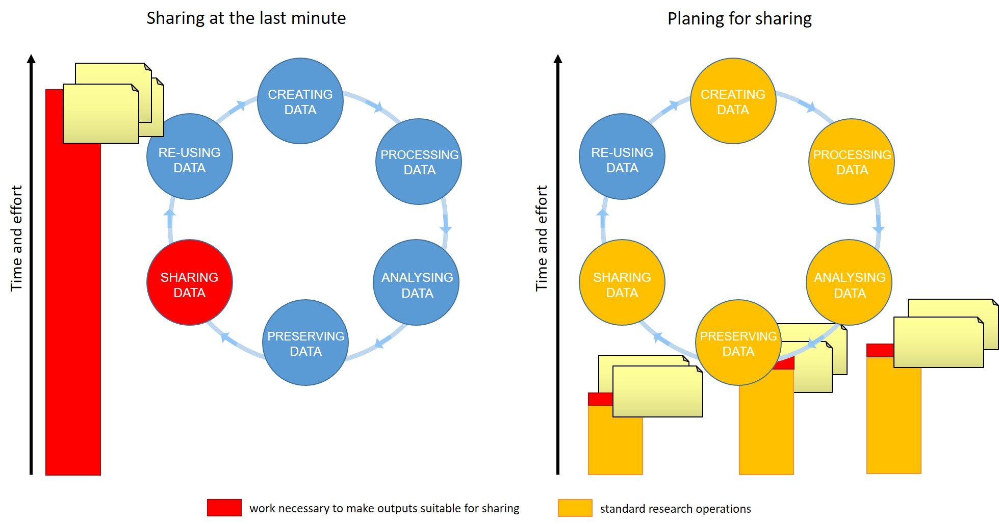

Introductions
- Sean Cleveland, Cyberinfrastructure Scientist, The University of Hawai’i Cyberinfrastructure & Hawaii Data Science Institute
- Bjarne Bartlett, CI-TRACS Data Science Fellow, The University of Hawai’i Cyberinfrastructure & Hawaii Data Science Institute
Hello everyone, and welcome to the FAIR Data Management Security and Ethics workshop.
For many of us, data management or output sharing in general are considered a burden rather than a useful activity. Part of the problem is our bad timing and lack of planning.
Data management is a continuous process
 Figure credits: Tomasz Zielinski and Andrés Romanowski from https://carpentries-incubator.github.io/fair-bio-practice/06-being-precise/index.html
In this workshop we will discuss how your research outputs can be made readily available for re-use by others.